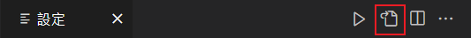

在 VSCode 設置 LaTeX 編輯環境
安裝 LaTeX
首先我們需要在電腦上安裝 LaTeX 的編譯引擎，目前主要的兩個發行版是 MiKTeX 與 TEX Live。稍後要在 VScode 安裝的延伸模組 LaTeX Workshop 推薦使用後者，不過整包安裝太過擁腫，因此我選擇使用 TEX Live 的輕量版 TinyTeX，需要用到什麼 package 再安裝。
若電腦有安裝 R 語言，則可以使用官方網站提供的另一種安裝方式。以下安裝方式有無安裝 R 語言皆可使用。
在 Windows 安裝 TinyTeX 只需要下載作者提供的 bat 檔並執行就能一鍵安裝（電腦需要有 powershell），可以在終端機輸入 tlmgr 指令測試是否安裝成功（需先重啟終端機）。未來若需要其他 package，可使用 tlmgr install <package name> 來安裝。
設置 LaTeX Workshop
首先在 VScode 安裝 LaTeX Workshop 這個延伸模組，然後進行以下設定。
設定 LaTeX 環境變數
LaTeX Workshop 的 LaTeX 路徑會去環境變數裡抓，因此要確保設定好環境變數。而上面安裝 TinyTeX 的 bat 檔會幫我們自動設定好環境變數 (%APPDATA%\TinyTeX)，因此可以直接進到下一步。
若你是剛安裝完就馬上進行設定，需要先將 VScode 完全關閉再重啟以重新獲取環境變數，否則會因找不到路徑而在編譯時產生 Recipe terminated with fatal error: spawn xelatex ENOENT 錯誤。
設定 LaTeX recipes and tools
首先打開設定，在右上角的按鈕點擊開啟設定 (JSON)，開啟的 settings.json 是 VScode 延伸模組的設定。

將下方的 code 加到 settings.json 的最後面（刪節號代表其他設置，不用複製），若想使用自己的配置可以自行修改：
1 | { |
上面的設定是 LaTeX 的編譯方式，由於我有撰寫中文內容的需求，因此選擇對支援 Unicode 的 XeLaTeX。BibTeX 則是用於管理、產生參考文獻目錄的格式，當使用到 .bib 的檔案時需要。
若文章主要以中文撰寫，建議使用 ctex 這個 package，功能較完整且方便使用，也會呼叫較底層的 xeCJK。
其他設定
以下設定為個人設定，僅供參考。可以直接加到 settings.json，或者在有 UI 的設定頁面進行設置。
"latex-workshop.latex.autoBuild.run": "never": 在何時進行自動編譯。never: 需手動編譯。onSave: 存檔時自動編譯。onFileChange: 檔案在任何情況下更動內容時編譯。
"latex-workshop.latex.autoClean.run": "never": 在何時清除輔助檔案。never: 永不清理。onFailed: 在編譯失敗時清理。onSucceeded: 在編譯成功時清理。onBuilt: 編譯後一律清理。
LaTeX 設定
嘗試編譯檔案
大致設置好後，可以先編譯一個檔案試試，首先隨意建立一個副檔名為 .tex 的檔案（為了避免錯誤，檔名建議使用英文），內容可以使用以下範例：
1 | \PassOptionsToPackage{quiet}{fontspec} % 忽略字型警告 |
存檔後若沒有自動編譯，可以按 Ctrl + Alt + B 來手動編譯。此時會發現編譯失敗，並產生了一個 <檔名>.log，在裡面可以找到一個錯誤訊息 ! LaTeX Error: File `ctex.sty' not found.。
安裝缺少的 package
這是因為 TinyTeX 一開始只包含了少量的 package，根據 TinyTeX 官方網站的說明，可以使用以下指令來搜尋是缺少的檔案是屬於哪個 package：
1 | $ tlmgr search --global --file "/ctex.sty" |
可以發現是缺了 ctex 這個 package，接著執行以下指令來安裝：
1 | tlmgr install ctex |
若出現版本太低的提示，可以照安裝 LaTeX 裡的檔案重新安裝到最新版。
接著再編譯一次，還是編譯失敗，而且錯誤訊息更多了，其中的關鍵訊息如下：
1 | Package fontspec Info: Could not resolve font "KaiTi/B" (it probably doesn't |
因為 ctex 預設使用的字型是簡體中文，而我們的電腦裡沒有這些字型，因此我們需要自己手動建立一個字型設定檔。
建立字型設定檔
Windows 預設的字型設定檔路徑是 C:/Users/<使用者名稱>/AppData/Roaming/TinyTeX/texmf-dist/tex/latex/ctex/fontset/，在此目錄下新增一個叫做 ctex-fontset-<name>.def 的檔案，name 是等等要使用的名稱。
在剛剛新增的檔案輸入以下內容，注意第一行要替換檔名：
1 | \ProvidesExplFile{ctex-fontset-windows-<name>.def}{\ExplFileDate}{0.0.1}{\ExplFileDescription} |
MingLiU 是新細明體、Microsoft~JhengHei 是微軟正黑體，DFKai-SB 是標楷體。可依需求改為其他字體。
接著要關閉 ctex 套用預設字型設定檔的功能，並使用我們剛剛弄好的設定檔。先在 LaTeX 檔案開頭的 \documentclass 的選項加入 fontset = none，再使用 \ctexset{fontset = <name>} 指定設定檔（自行替換 name）。
1 | \documentclass[fontset = none, 12pt]{ctexrep} |
最後存檔再次編譯就能順利產生 pdf 檔了。
若仍然會讀取到預設的字型檔案，可以嘗試將 VScode 完全關閉再開。
如果想針對某個檔案製作特殊的設定檔，可以將 ctex-fontset-<name>.def 放在與 LaTeX 檔案相同的目錄下。